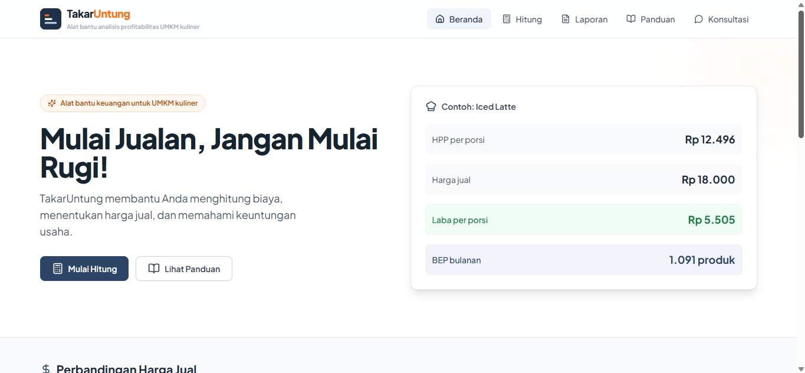
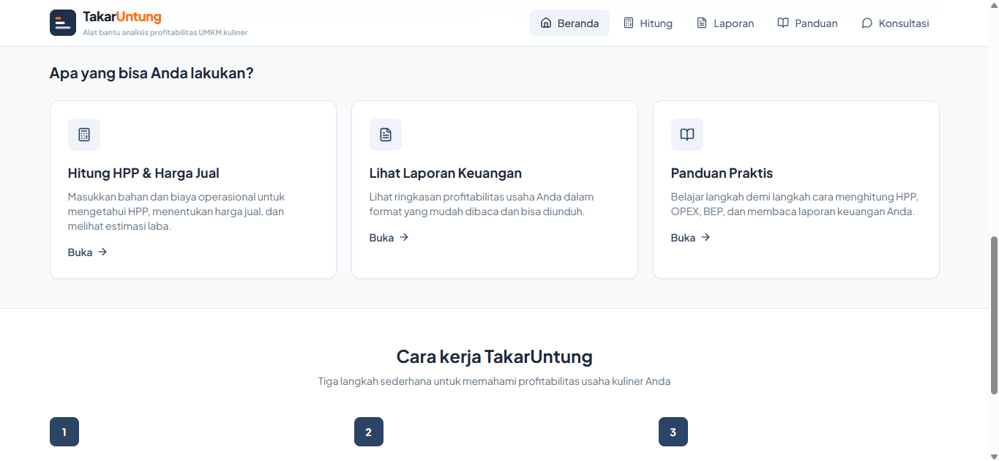

Personal experience
I once priced sandwiches for a student fundraising initiative using estimated ingredient costs and sales targets, without calculating full COGS.
Helping beginner culinary MSMEs assess profitability by connecting costs, pricing, and profit in one flow.
Actual interface and calculations shown in the live MVP.
This project started from a familiar experience: setting a price without seeing the full picture of costs and profitability.
I once priced sandwiches for a student fundraising initiative using estimated ingredient costs and sales targets, without calculating full COGS.
Online menu prices can be similar to offline prices. I wondered whether platform fees and other deductions were fully considered.
Existing tools such as Hitung Harga Jual, Moka, and Majoo showed different areas of focus. I saw an opportunity to connect cost, channel pricing, and profitability.
Hypothesis formulated from the observed problem and research direction, not a claim of validated behavior.
A culinary micro-business owner balancing costs, customer expectations, and profitability.
Keep prices acceptable for customers while making sure the business earns profit.
Already operating a small food or beverage business and managing decisions independently.
Uses ingredient costs and market prices, then recalculates when costs or conditions change.
Cost, market price, customer affordability, and profit are difficult to balance at once.
13 survey responses and 6 micro-interviews helped frame the pricing and cost-management challenge.
Ingredient costs were considered, but that alone does not guarantee an expected profit.
Changes in costs and market conditions can trigger price reevaluation.
Cost and profit estimates are useful before setting or adjusting selling prices.
Beginner culinary business owners use different methods to calculate product costs and selling prices. When ingredient costs or market conditions change, they need to reevaluate prices to remain suitable for customers while still generating profit.
Rather than solving isolated calculations, TakarUntung brings the main pricing decisions into a single profitability flow.
The opportunity was to help users see how costs, price, break-even, and profit relate to one another, making financial information more actionable.
Move beyond estimation alone.
Link costs, price, BEP, and profit.
Make financial figures easier to understand.
I narrowed the initial concept to a focused MVP based on user problems, product impact, development effort, and time constraints.
Focused on the core pricing-to-profitability flow.
I translated requirements into user stories and priorities, mapped the end-to-end user flow, then used that flow to guide MVP development.
See the actual MVP flow, including cost calculation, pricing, and profitability reports.
Try the live MVP ↗AI-assisted development was an iterative partnership. Product requirements were translated into prompts, implemented, tested, debugged, and refined. I remained responsible for product decisions and reviewing the results.


Testing after the first build exposed issues in inputs, conversion, product state, and online pricing calculations.
Open TakarUntung to explore the offline and online pricing comparison and see how platform deductions affect estimated profit.
Try the live MVP ↗Core calculations were built and audited, but this project still needs validation with real users in their business context. A working MVP is not the same as proven product-market fit.
Research should shape the direction, not merely support an idea I already like.
Focus is about protecting the core value, not simply making the feature list shorter.
A functioning MVP still needs real users and context to validate assumptions.
Tools can accelerate implementation, but product decisions remain my responsibility.
Selected materials documenting the research, product decisions, design, planning, and build.
Research materials may contain participant information. Please review sharing permissions and redact personal data before making documents publicly accessible.
A product case built around research, decisions, iteration, and hands-on development.